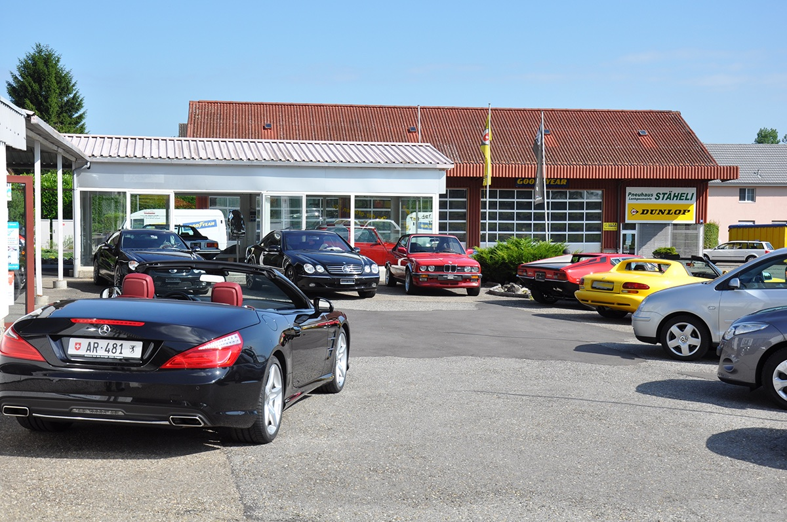
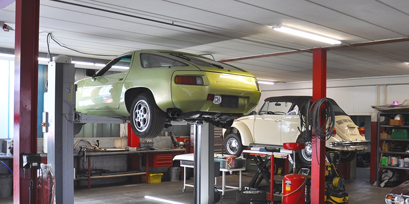
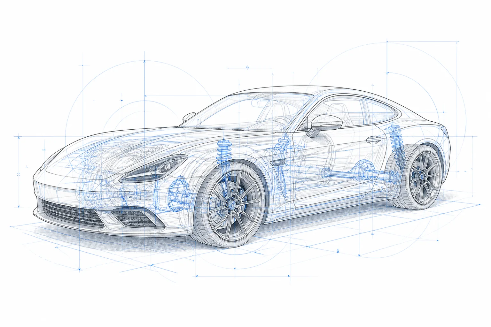

Unsere Leistungen
Kompetenz.
Leidenschaft.
Ergebnis.
Alles aus einer Hand: für Fahrzeuge, die mehr verdienen. Transparente Beratung, präzise Diagnose und saubere Arbeit.
Termin buchen ↗
Mechanik & Wartung
Inspektion, Bremsen, Fahrwerk, Motor, Getriebe und Elektrik.
 ↗
02
↗
02Reparatur & Diagnose
Fehler finden, Optionen erklären, sauber reparieren.
 ↗
03
↗
03Restaurierung
Substanz erhalten und Arbeiten nachvollziehbar planen.
 ↗
04
↗
04Pflege & Lagerung
Bereit halten, sicher einlagern, regelmäßig betreuen.
 ↗
05
↗
05Reifenwechsel
Sommer- und Winterräder inklusive Zustandskontrolle.

↗ 06Reifenhotel
Räder kennzeichnen, lagern und zur Saison vorbereiten.
Detailing
Innenraum, Lack und Oberflächen materialgerecht pflegen.
 ↗
08
↗
08Saison- & MFK-Check
Relevante Komponenten vor Saisonstart oder Prüfung kontrollieren.
 ↗
↗
Service, sichtbar gemacht
Ein Fahrzeug.
Alle Kompetenzen.
Jeder Bereich wird dort erklärt, wo er am Fahrzeug wirkt. Wählen Sie eine Leistung für Details und Termin.

01Wartung & InspektionWerterhalt durch planbare Wartung 02Reparatur & DiagnoseMechanik, Elektrik, Fehleranalyse 03RestaurierungSubstanz erhalten, Historie bewahren 04Reifen & RäderWechsel, Prüfung, Einlagerung 05Aufbereitung & PflegeInnenraum und Oberflächen 06Saison & MFKKontrolle vor Start oder PrüfungDirekter Kontakt
Nicht sicher, was Ihr Auto braucht?
Problem kurz beschreiben. Wir wählen gemeinsam den passenden Termin.